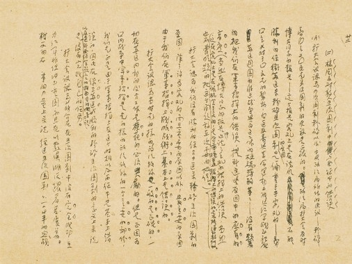
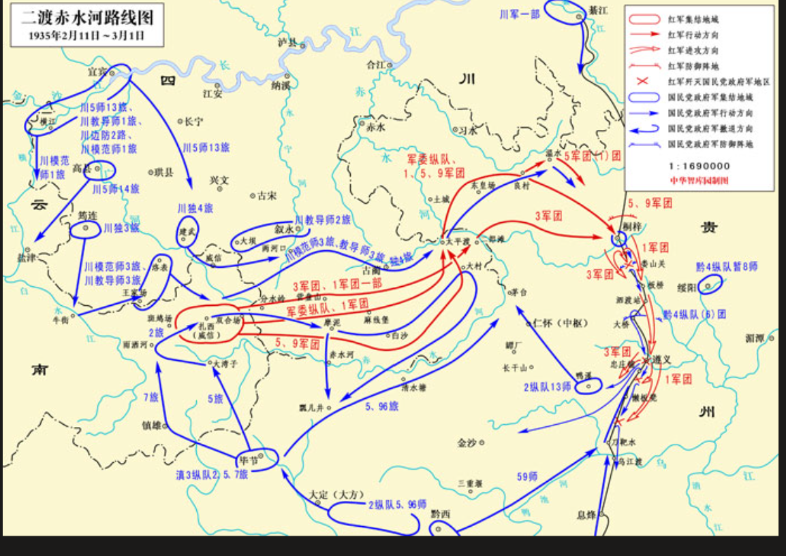
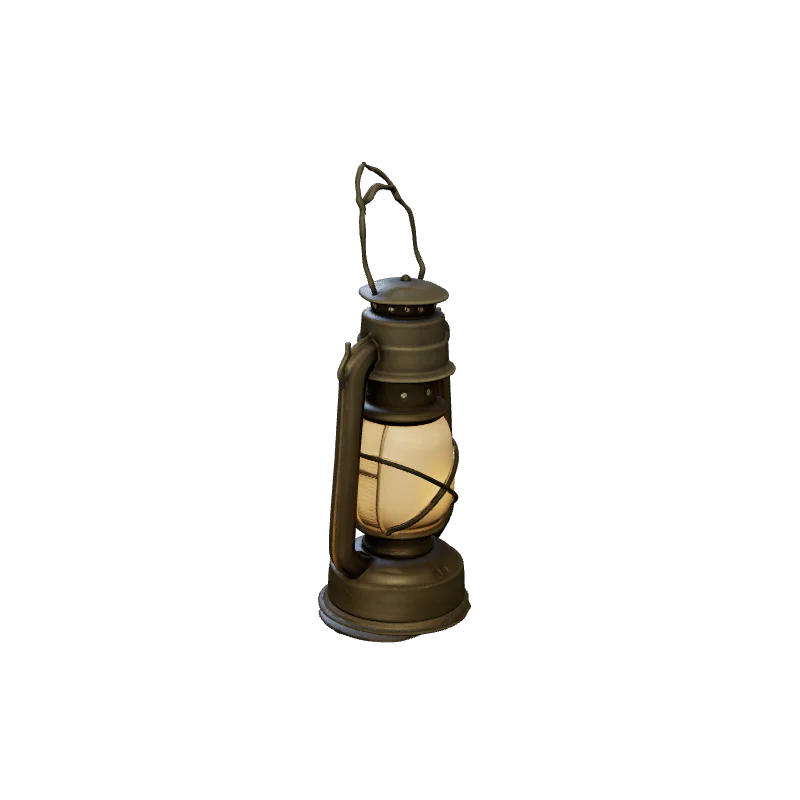
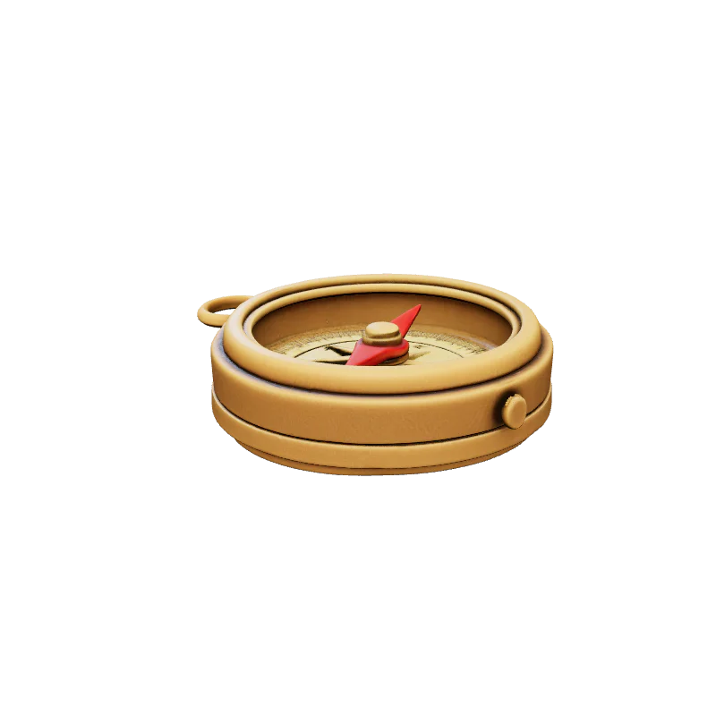
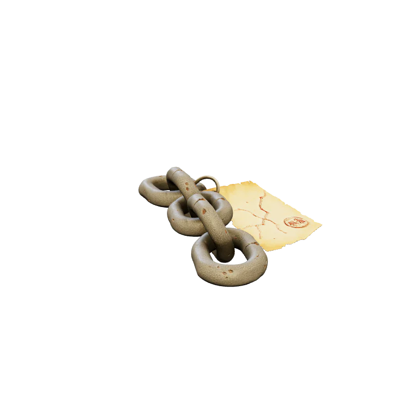

带来好奇与选择
观众无需预先掌握完整知识，只需要进入一个任务、作出一次判断，并愿意看看真实材料。
Historical Sources
每关右上角都有统一史料抽屉。观众不点也不阻断通关；点开后可以查看本关全部照片、地图、手稿及来源说明。

遵义会议相关手稿影印件
二渡赤水河路线图 红军三大主力会师示意图
红军三大主力会师示意图3D Archive Fragments
每关完成后获得一件象征性数字文物。优先展示轻量 GLB 模型，设备不支持时自动使用2D备用图。

夜行马灯瑞金出发 渡江军号湘江血战
渡江军号湘江血战 会议钢笔遵义会议
会议钢笔遵义会议
行军罗盘四渡赤水
泸定铁索泸定桥 信念红星雪山草地
信念红星雪山草地